# 安装包
if (!requireNamespace("ggplot2", quietly = TRUE)) {
install.packages("ggplot2")
}
if (!requireNamespace("ggpmisc", quietly = TRUE)) {
install.packages("ggpmisc")
}
if (!requireNamespace("ggpubr", quietly = TRUE)) {
install.packages("ggpubr")
}
if (!requireNamespace("ggExtra", quietly = TRUE)) {
install.packages("ggExtra")
}
if (!requireNamespace("geomtextpath", quietly = TRUE)) {
install.packages("geomtextpath")
}
if (!requireNamespace("plotly", quietly = TRUE)) {
install.packages("plotly")
}
if (!requireNamespace("dplyr", quietly = TRUE)) {
install.packages("dplyr")
}
# 加载包
library(ggpmisc)
library(ggplot2)
library(ggpubr)
library(ggExtra)
library(geomtextpath)
library(plotly)
library(dplyr)散点图
散点图是一种基础的可视化图表，用于表示因变量随自变量而变化的大致趋势。
示例
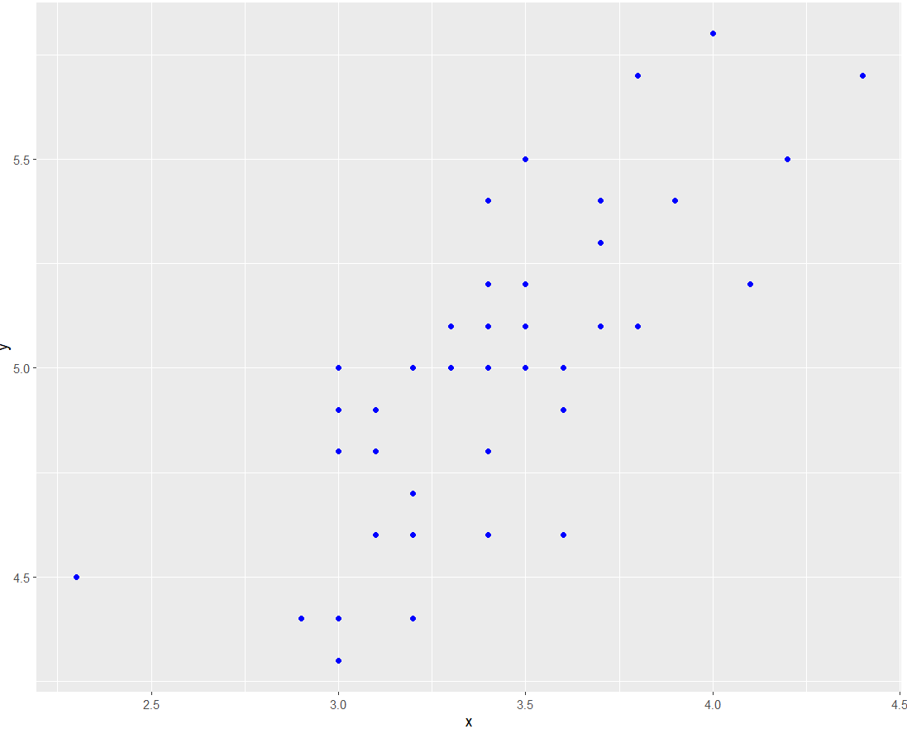
以上基础散点图可以直观地表示因变量y随着自变量x变化的一个大致趋势，可以看出，y大致随着x的增加而增大。
环境配置
系统要求： 跨平台（Linux/MacOS/Windows）
编程语言：R
依赖包：
ggplot2,ggpmisc,ggpubr,ggExtra,geomtextpath,plotly,dplyr
sessioninfo::session_info("attached")─ Session info ───────────────────────────────────────────────────────────────
setting value
version R version 4.5.3 (2026-03-11)
os Ubuntu 24.04.4 LTS
system x86_64, linux-gnu
ui X11
language (EN)
collate C.UTF-8
ctype C.UTF-8
tz UTC
date 2026-04-16
pandoc 3.1.3 @ /usr/bin/ (via rmarkdown)
quarto 1.9.37 @ /usr/local/bin/quarto
─ Packages ───────────────────────────────────────────────────────────────────
package * version date (UTC) lib source
dplyr * 1.2.1 2026-04-03 [1] RSPM
geomtextpath * 0.2.0 2025-07-21 [1] RSPM
ggExtra * 0.11.0 2025-09-01 [1] RSPM
ggplot2 * 4.0.2.9000 2026-04-14 [1] Github (tidyverse/ggplot2@7d79c95)
ggpmisc * 0.7.0 2026-03-23 [1] RSPM
ggpp * 0.6.0 2026-01-18 [1] RSPM
ggpubr * 0.6.3 2026-02-24 [1] RSPM
plotly * 4.12.0 2026-01-24 [1] RSPM
[1] /home/runner/work/_temp/Library
[2] /opt/R/4.5.3/lib/R/site-library
[3] /opt/R/4.5.3/lib/R/library
* ── Packages attached to the search path.
──────────────────────────────────────────────────────────────────────────────数据准备
使用 R 内置数据集 iris 和 NCBI GSE243555 数据集
# 1.加载 iris 数据集
data <- iris
# 2.加载基因表达数据（前两行）
data_counts <- read.csv("https://bizard-1301043367.cos.ap-guangzhou.myqcloud.com/GSE243555_all_genes_with_counts.txt", sep = "\t", header = TRUE, nrows = 10)
axis_names <- data_counts[c(1, 2), 1] # 保存名称
data_counts <- data_counts %>%
select(-1) %>% # 去除第一列
slice(1:2) %>% # 保留前两行
t() %>% # 倒置
as.data.frame() %>%
setNames(c("V1", "V2")) # 设置列名
head(data_counts) V1 V2
MCF7.HG..1. 2905 178
MCF7.HG..LG..2. 2496 161
ADIPO.HG..2. 1802 184
ADIPO.HG..LG..2. 1400 174
MCF7...ADIPO..HG..2. 2180 154
MCF7...ADIPO..HG..LG..2. 2123 118可视化
1. 基本绘图
图 1 这个图是基本散点图，调用geom_point()就可绘制出来。
# 基本散点图
p <- ggplot(data, aes(x = Sepal.Width, y = Sepal.Length)) +
geom_point()
p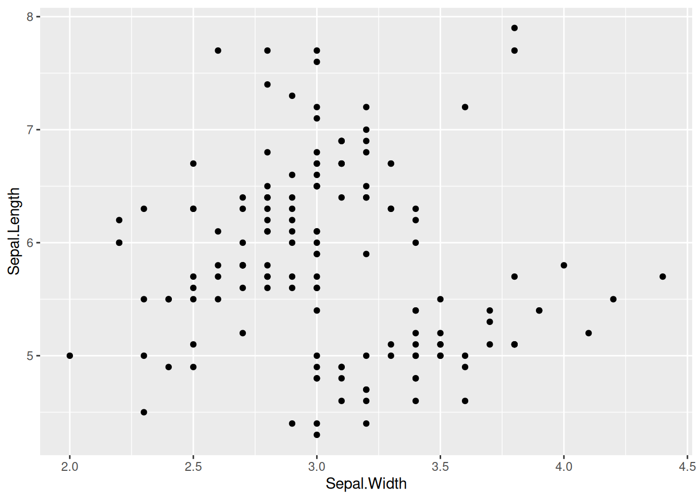
2. 设置点样式
图 2 这个图在基本散点图的基础上更改了点的形状、大小和颜色样式。
# 在`geom_point`中设置形状、大小和颜色参数
p <- ggplot(data, aes(x = Sepal.Width, y = Sepal.Length)) +
geom_point(shape = 17, size = 1.5, color = "blue")
p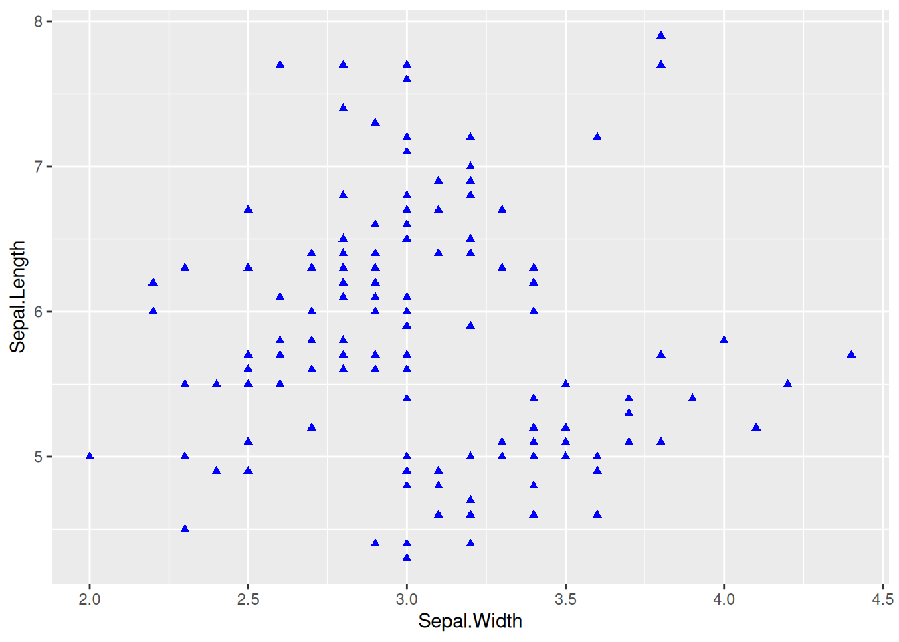
提示
关键参数: shape
shape 为点的形状，可选值为0-25，具体形状见下图:
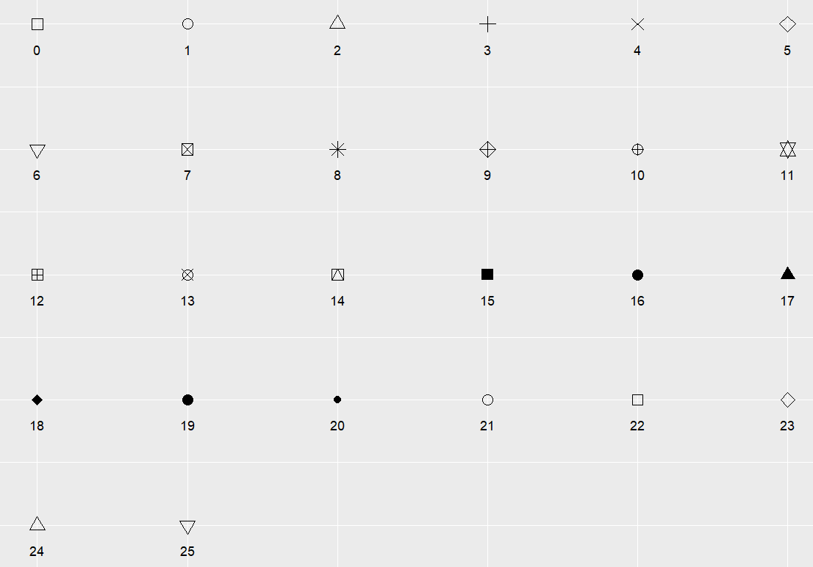
3.多类数据绘图，更改图例位置
多类数据绘图
图 3 这个图使用color=Species将物种变量映射到颜色特征中，使不同物种有着不同的颜色。
# 多类数据绘图
p_multi <- ggplot(data, aes(x = Sepal.Width, y = Sepal.Length, color = Species)) +
geom_point(shape = 16, size = 1.5)
p_multi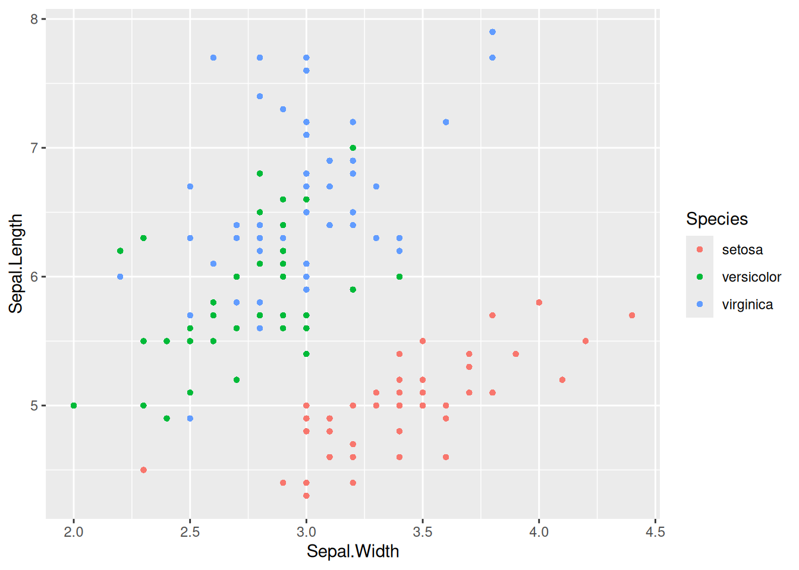
提示
关键参数: color=Species
这里将Species变量映射到了color特征中，不同的Species组会有不同的color；也可以将变量映射到多个特征比如alpha=Species（将物种变量映射到透明度特征中，即三类数据点会有不同的透明度）,shape=Species（将物种变量映射到形状变量中）等。
将分类变量映射到其他特征
图 4 这个图将物种变量映射到颜色和形状上，不同物种有不同的颜色和形状。
## 将变量映射到其他任何特征中
p_multi <- ggplot(data, aes(
x = Sepal.Width, y = Sepal.Length,
color = Species, shape = Species
)) +
geom_point()
p_multi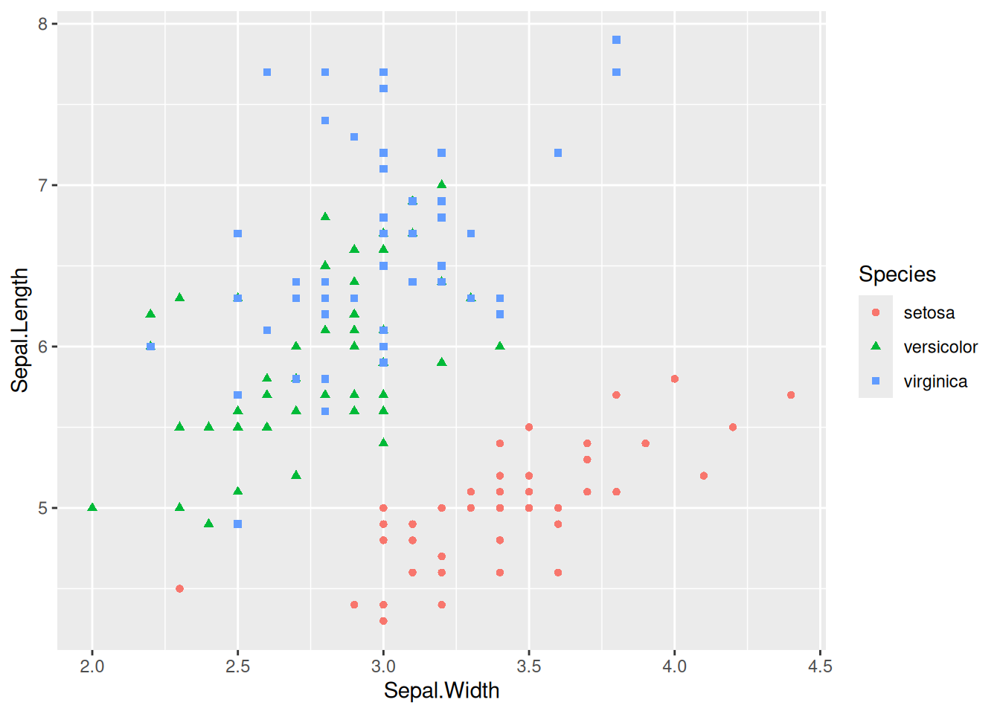
更改图例位置
图 5 这个图将图例放在了图中的空白位置，显得更加美观。
## 将变量映射到其他任何特征中
p_multi <- ggplot(data, aes(
x = Sepal.Width, y = Sepal.Length,
color = Species, shape = Species
)) +
geom_point() +
# 可以调用`theme()`更改图例位置
theme(legend.position = "inside", legend.position.inside = c(0.87, 0.8))
p_multi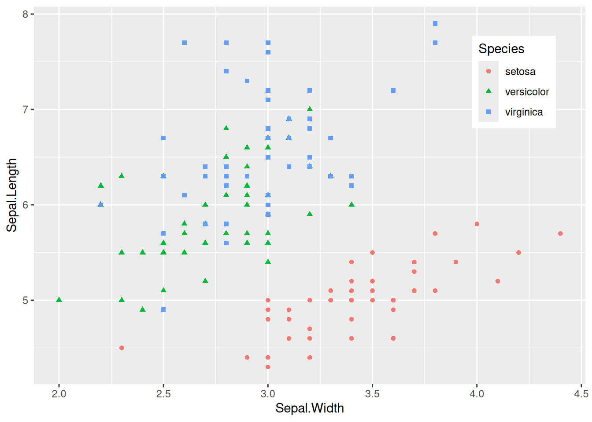
提示
关键参数: theme
legend.position：
设置图例的位置，可选择的有”none”, “left”, “right”, “bottom”, “top”, “inside”,几种形式。
legend.position.inside：
当且仅当legend.position="inside"生效，一般形式为legend.position.inside=c(x,y)，其中x,y为数值，均在0-1之间。x越大，图例越靠右；y越大图例越靠上。可以根据实际空白处进行调整。
4. 增加点标签
geom_text()点标签
图 6 这个图使用geom_text()绘制点标签。
# 基本绘图+点标签
# 为了保证点不重叠，只选了物种为"setosa"数据进行绘图
p <- ggplot(data = data[data$Species == "setosa", ], aes(x = Sepal.Width, y = Sepal.Length)) +
geom_point(shape = 16, size = 1.5, color = "blue") +
geom_text(
label = rownames(data[data$Species == "setosa", ]),
nudge_x = 0.03, nudge_y = -0.04,
check_overlap = T
)
p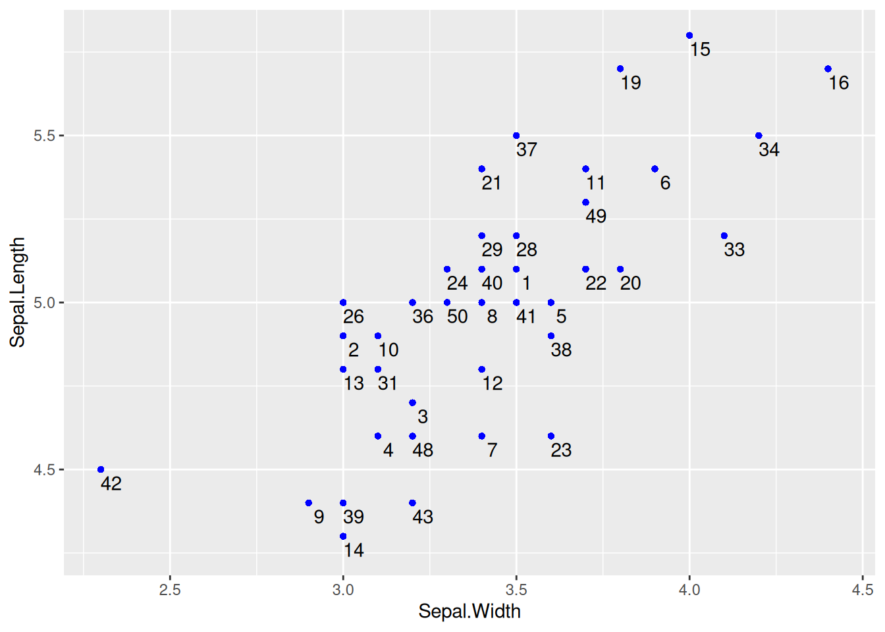
geom_text()点标签
提示
关键参数: geom_text
label:
显示在图上的标签内容，可以是列名也可以是其他特征。
nudge_x,nudge_y:
以每个点为中心，nudge_x,nudge_y表示与这个中心点的偏离值，通过调整使标签在最佳的位置。
check_overlap：
布尔值，当为true时，会避免重叠，但会使有些点标签不会显示；当为false时，不会检查点是否重叠。
geom_label()点标签
图 7 这个图使用geom_label()也可以绘制点标签。
# `geom_label`也可以用于绘制点标签，参数可以不变化
p <- ggplot(data = data[data$Species == "setosa", ], aes(x = Sepal.Width, y = Sepal.Length)) +
geom_point(shape = 16, size = 1.5, color = "blue") +
geom_label(
label = rownames(data[data$Species == "setosa", ]),
nudge_x = 0.025, nudge_y = -0.04, size = 2.5
)
p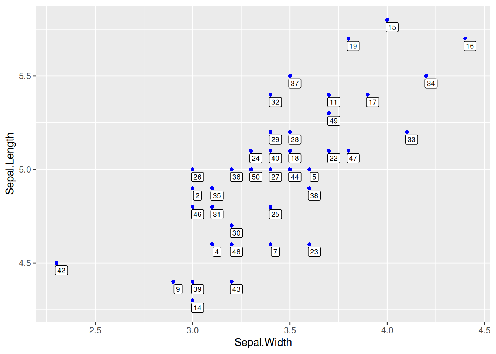
geom_label()点标签
5. 回归曲线和回归方程/相关系数
绘制回归曲线
图 8 这个图使用geom_smooth()引入了回归曲线，是文章中常见的形式。
# 绘制回归曲线
p <- ggplot(data_counts, aes(x = V1, y = V2)) +
geom_point() +
geom_smooth(method = "lm", formula = y ~ x, se = T, color = "red")
p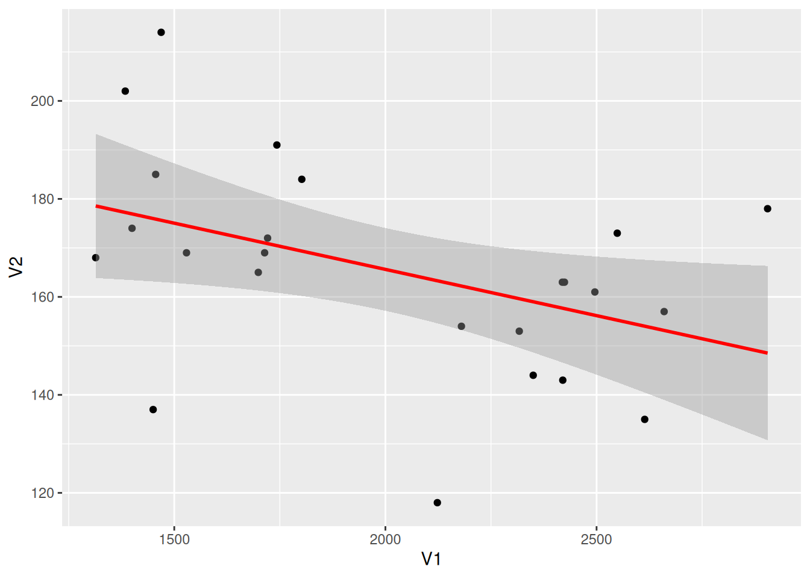
提示
关键参数: geom_smooth
method:
选择绘制回归曲线的方法，默认method=NULL，可选择”lm”, “glm”, “gam”, “loess” 或者自定义函数。
formula:
用于绘制回归曲线的公式，默认formula=NULL,可选择 y ~ x, y ~ poly(x, 2), y ~ log(x)等。
se:
布尔取值，true表示显示置信区间，默认se = TRUE。
添加回归方程
图 9 这个图在左上角标注了回归方程、R方、P值等信息。
# 绘制回归曲线
p <- ggplot(data_counts, aes(x = V1, y = V2)) +
geom_point() +
geom_smooth(method = "lm", formula = y ~ x, se = T, color = "red") +
# 引入回归方程，eq：方程，R2：R方，P：p值
stat_poly_eq(use_label("eq", "R2.CI", "P"), formula = y ~ x, size = 4, method = "lm")
p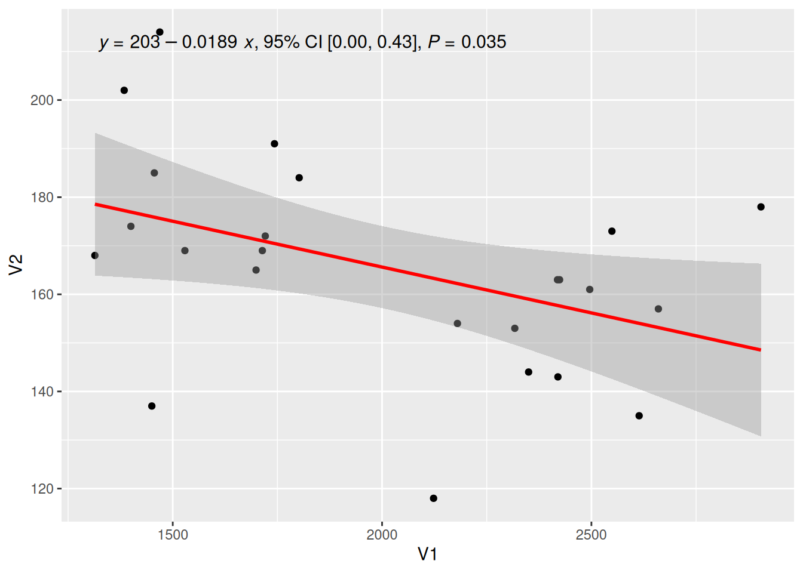
提示
关键参数: use_label
所要添加的标签类型，“eq”,“R2”,“P”分别为回归方程的方程，R方值和p值，还有其他可选值如”R2.CI”(显示95%置信区间)、“method”(显示方法)。
调整回归方程的标签位置
图 10 这个图使用了label.y、label.x参数按照需要调整了标签位置。
## 调整标签到合适的地方
p <- ggplot(data_counts, aes(x = V1, y = V2)) +
geom_point() +
geom_smooth(method = "lm", formula = y ~ x, se = T, color = "red") +
stat_poly_eq(use_label("eq"),
formula = y ~ x, size = 4, method = "lm",
label.y = 0.45, label.x = 0.5, angle = -5
)
p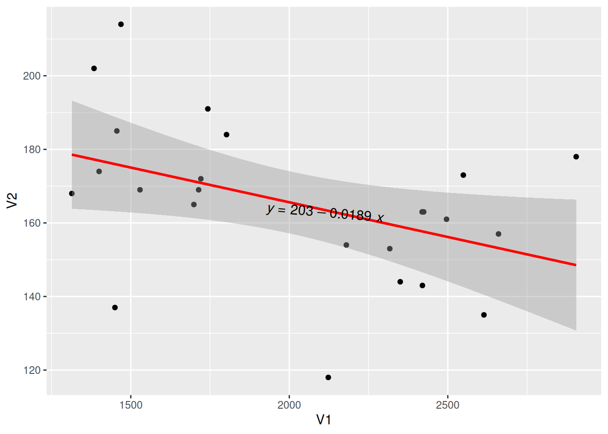
引入回归方程的多类数据绘图
图 11 这个图使用多类数据绘图，并添加了回归曲线及其标签。
# 多类数据绘图并调整标签
p_multi <- ggplot(data, aes(x = Sepal.Width, y = Sepal.Length, color = Species, shape = Species)) +
geom_point(size = 1.5) +
scale_colour_manual(values = c("setosa" = "purple", "versicolor" = "blue", "virginica" = "pink")) +
theme(legend.position = "inside", legend.position.inside = c(0.87, 0.8)) + # 设置图例位置
geom_smooth(method = "lm", formula = y ~ x, se = T) +
stat_poly_eq(use_label("eq"),
formula = y ~ x, size = 3.5, method = "lm",
label.x = c(0.6, 0.6, 0.6), label.y = c(0.2, 0.6, 0.75), angle = 10, color = "black"
)
p_multi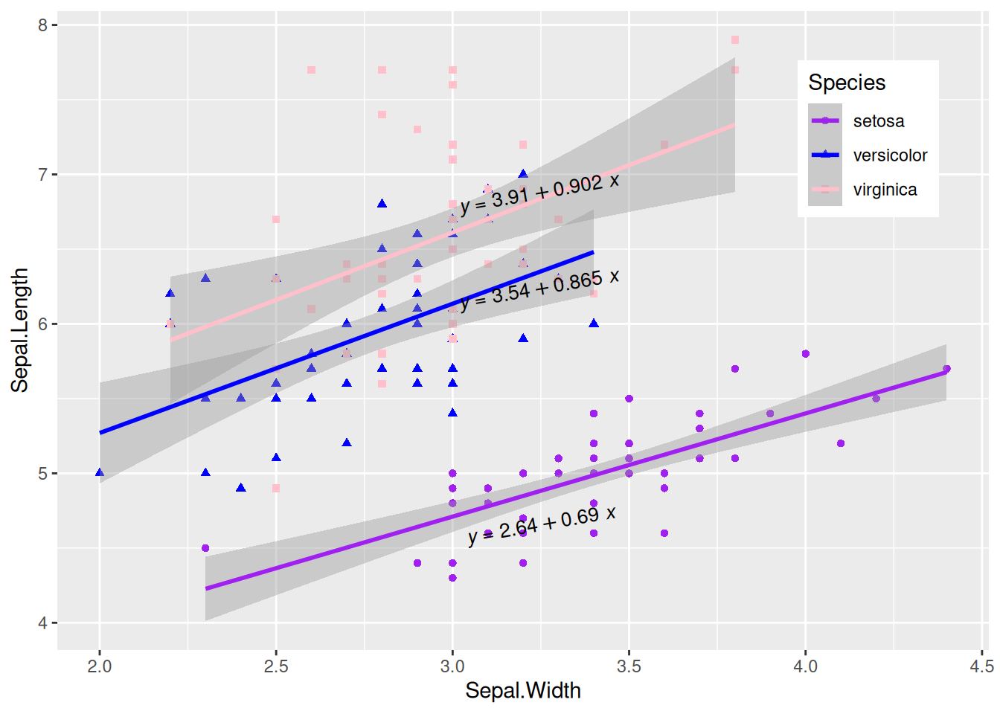
显示相关系数
图 12 这个图使用stat_cor()函数显示相关系数标签。
# 显示相关系数
p <- ggplot(data_counts, aes(x = V1, y = V2)) +
geom_point() +
geom_smooth(method = "lm", formula = y ~ x, se = T, color = "red") +
stat_cor(
method = "pearson", label.sep = ",",
p.accuracy = 0.00001, r.digits = 5, size = 4
)
p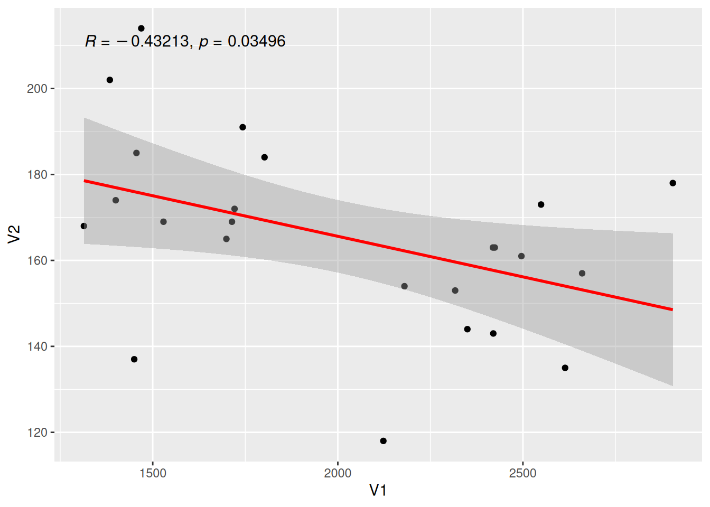
提示
关键参数: stat_cor
method:
计算相关系数的方法，可选项有”pearson” (默认)，“kendall”，“spearman”。
label.sep:
标签的间隔符，默认为”,“。
r.accuracy,p.accuracy:
R值或P值的精确度。
r.digits,p.digits：
R值或P值的有效数字。
6. 添加回归曲线上的标签
添加标签的单类数据绘图
图 13 这个图使用geom_labelsmooth()为回归曲线添加标签。
## 绘制回归线并添加标签
p <- ggplot(data[data$Species == "setosa", ], aes(x = Sepal.Width, y = Sepal.Length)) +
geom_point(shape = 16, size = 2, color = "blue") +
geom_labelsmooth(aes(label = Species[1]),
fill = "white",
method = "lm", formula = y ~ x,
size = 6, linewidth = 1,
boxlinewidth = 0.6, linecolour = "red"
)
p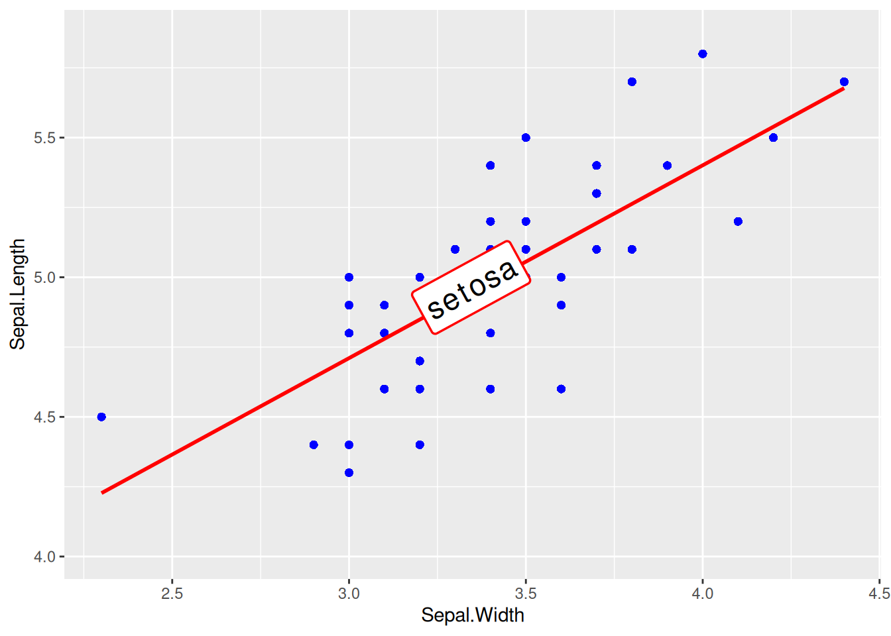
提示
关键参数: geom_labelsmooth
label：
标签名称。
fill：
方框填充颜色。
linewidth:
线的粗细。
boxlinewidth:
方框边框的粗细。
添加标签的多类数据绘图
图 14 这个图为多类数据添加相应标签。
# 添加标签的多类数据绘图
p <- ggplot(data, aes(x = Sepal.Width, y = Sepal.Length, color = Species, shape = Species)) +
geom_point(size = 2) +
theme(legend.position = "none") +
geom_labelsmooth(aes(label = Species),
fill = "white",
method = "lm", formula = y ~ x,
size = 3, linewidth = 0.6, boxlinewidth = 0.3
)
p 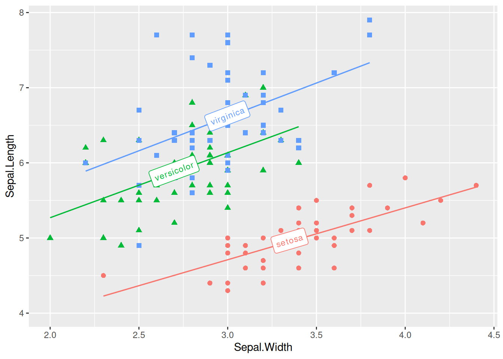
7. 引入边缘轴须图
图 15 这个图使用geom_rug()添加了边缘轴须。
p <- ggplot(data, aes(x = Sepal.Width, y = Sepal.Length)) +
geom_point(shape = 16, size = 1.5, color = "blue") +
geom_rug(color = "steelblue", alpha = 0.1, linewidth = 1.5)
p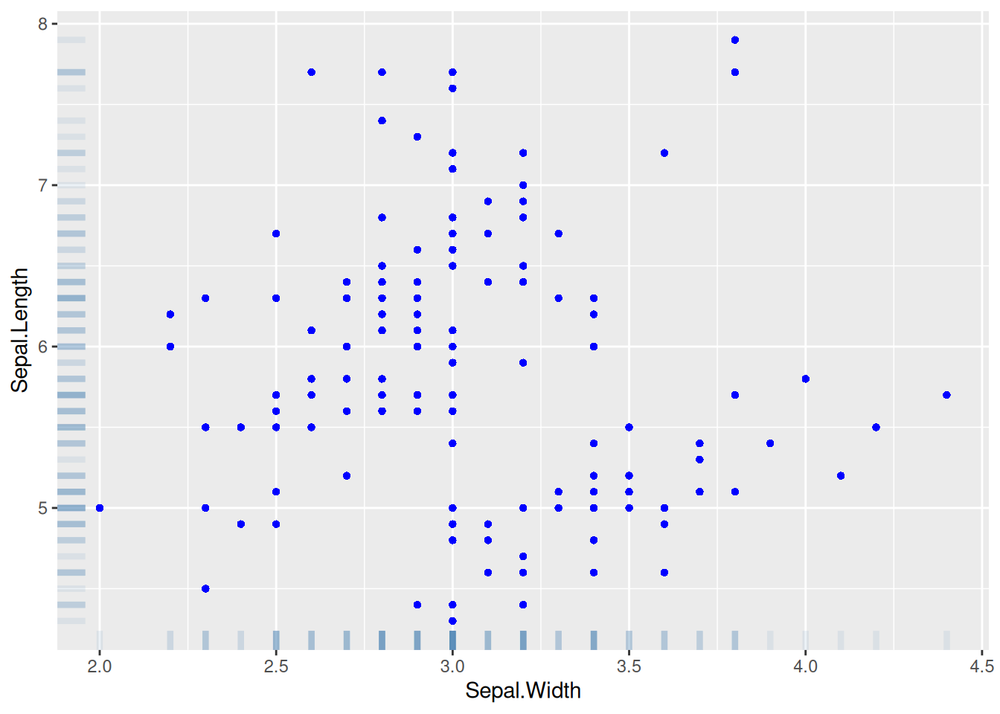
8. 引入边际分布
图 16 这个图引入了直方图的边际分布，多个参数可用于调节边际图样式。
# 引入边际分布
p <- ggplot(data, aes(x = Sepal.Width, y = Sepal.Length)) +
geom_point(shape = 16, size = 1.5, color = "blue")
p
p1 <- ggMarginal(p,
type = "histogram", color = "red", fill = "green",
margins = "both", xparams = list(bins = 12, fill = "purple")
)
p1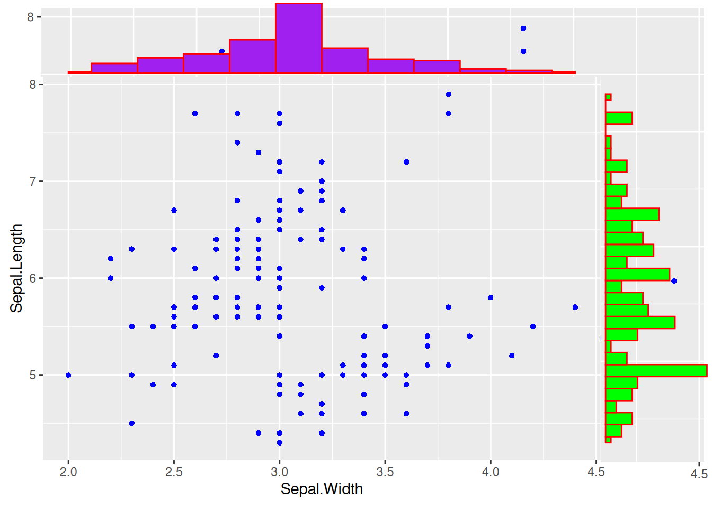
提示
关键参数: ggMarginal
type:
边际分布图的类型，可选项有”density”, “histogram”, “boxplot”, “violin”, “densigram”。
margins:
设置哪个边缘绘制边际分布图，margins=c(x,y)表示x,y边都绘制边际图。
xparams,yparams：
设置边的图只对x或y维度有效，参数包括常见参数color、fill、size，也包含这个边际图的特有参数,比如直方图的bins。
bins:
同直方图的参数bins，将直方图划分成几个条块。
9. 绘制3D交互式散点图
图 17 这个图使用了3列数据，并支持交互浏览。
## 3D交互式散点图
p <- plot_ly(data,
x = ~ data$Sepal.Length, y = ~ data$Sepal.Width,
z = ~ data$Petal.Length, color = ~ data$Species,
colors = c("#FF6DAE", "#D4CA3A", "#00BDFF"),
marker = list(size = 5)
) %>%
add_markers() # 将上述图添加到`plotly`可视化中
p应用场景
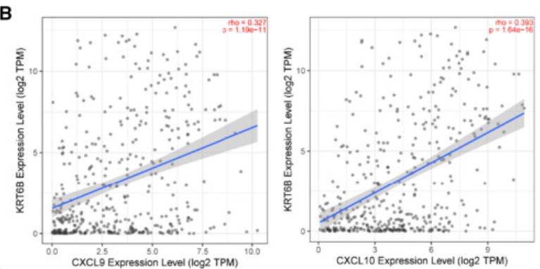
图中显示KRT6B表达与免疫相关基因（包括CXCL9和CXCL10）呈正相关。 [1]
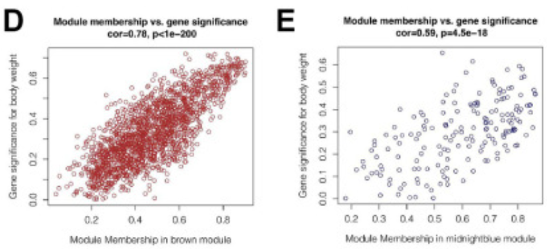
图中显示，在棕色和深蓝色模块中，模块成员与基因重要性之间存在很强的正相关关系（cor=0.78&p<0.001, cor=0.59&p<0.001）。[2]
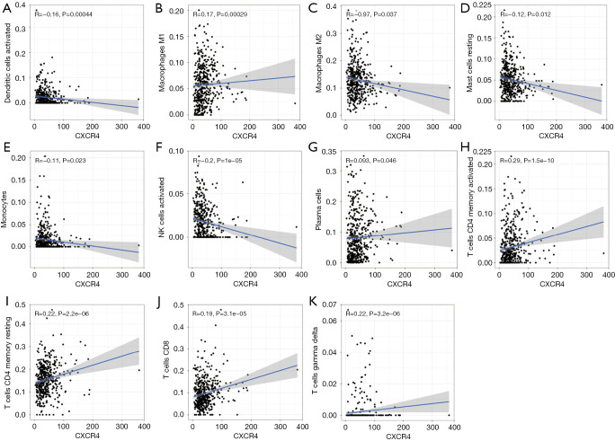
图中探索了CXCR4和多种免疫细胞的关联。 [3]
参考文献
[1] Song Q, Yu H, Cheng Y, et al. Bladder cancer-derived exosomal KRT6B promotes invasion and metastasis by inducing EMT and regulating the immune microenvironment[J]. J Transl Med, 2022,20(1):308.
[2] Xie J, Chen L, Wu D, et al. Significance of liquid-liquid phase separation (LLPS)-related genes in breast cancer: a multi-omics analysis[J]. Aging (Albany NY), 2023,15(12):5592-5610.
[3]Zhang S, Hou L, Sun Q. Correlation analysis of intestinal flora and immune function in patients with primary hepatocellular carcinoma[J]. J Gastrointest Oncol, 2022,13(3):1308-1316.